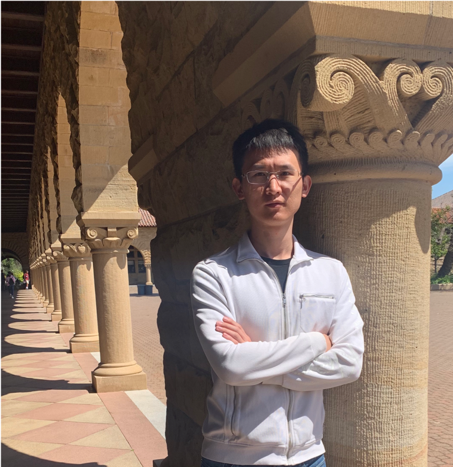

|
Shichang Zhang
|
 |
About Me
I am currently a fourth-year Ph.D. student in Computer Science at University of California, Los Angeles (UCLA) Data Mining Lab working with Professor Yizhou Sun. My research is generously supported by the J.P. Morgan Chase AI Ph.D. Fellowship and the Amazon Fellowship. Before joining UCLA, I received my B.A. and M.S. both in Statistics from Berkeley and Stanford respectively.
I organize the UCLA Data Mining Reading Group. We cover interesting graph machine learning papers every week. Please check the past slides and recordings here. The reading group also digs deep into one cutting-edge AI research topic each quarter. The topic for this quarter is Neural Radiance Fields (NeRF). In the past, we have covered diffusion models, large language models, differential geometry, probabilistic graphical models, and spectral graph theory. Please find past slides and recordings here. My personal presentations at the reading group can be found under Talks.
Contact
3551 (ScAI Lab), Bolter Hall, UCLA, CA, 90095
E-mail: shichang AT cs DOT ucla DOT edu
[Google Scholar] [GitHub] [Twitter] [LinkedIn][CV]
|
What's New
[July 2023] I am excited to be selected as one of the 2023 Amazon Fellows
[July 2023] I am excited to receive the J.P. Morgan Chase AI Ph.D. Fellowship
[July 2023] Give a talk on the PaGE-Link paper at Amazon Trans.AI Research Talk Series [slides]
[June 2023] Our survey paper on GNN acceleration is on arXiv now, which covers algorithms, systems, and customized hardware [PDF]
[April 2023] One paper on GNN distillation for link prediction is accepted by ICML 2023 [PDF]
[Feb 2023] Give a talk on the GStarX paper at AI TIME NeurIPS Talk Series [slides][video (in Chinese, starting from 00:19:05)]
[Jan 2023] One paper on GNN explanation for link prediction is accepted by WWW 2023 [PDF]
[Sept 2022] One paper on GNN explanation is accepted by NeurIPS 2022 [Paper]
[July 2022] Selected as the top 10% of reviewers for ICML 2022
Find out older news
Research Interests
My research interests include
Graph Neural Network
Explainable AI
Trustworthy AI
Model Efficiency
Causality
Self-supervised Learning
Publications and Pre-prints
A Survey on Graph Neural Network Acceleration: Algorithms, Systems, and Customized Hardware (pre-print)
Shichang Zhang, Atefeh Sohrabizadeh, Cheng Wan, Zijie Huang, Ziniu Hu, Yewen Wang, Yingyan (Celine) Lin, Jason Cong, Yizhou Sun [PDF]
PaGE-Link: Graph Neural Network Explanation for Heterogeneous Link Prediction (WWW 2023)
Shichang Zhang, Jiani Zhang, Xiang Song, Soji Adeshina, Da Zheng, Christos Faloutsos, Yizhou Sun. [PDF][code]
Linkless Link Prediction via Relational Distillation (ICML 2023)
Zhichun Guo, William Shiao, Shichang Zhang, Yozen Liu, Nitesh Chawla, Neil Shah, Tong Zhao [PDF]
GStarX: Explaining Graph Neural Networks with Structure-Aware Cooperative Games (NeurIPS 2022)
Shichang Zhang, Neil Shah, Yozen Liu, Yizhou Sun [PDF] [code]
Graph-less Neural Networks, Teach Old MLPs New Tricks via Distillation (ICLR 2022)
Shichang Zhang, Yozen Liu, Yizhou Sun, Neil Shah [PDF] [code]
Graph Condensation for Graph Neural Networks (ICLR 2022)
Wei Jin, Lingxiao Zhao, Shichang Zhang, Yozen Liu, Jiliang Tang, Neil Shah [PDF] [code]
Motif-driven Contrastive Learning of Graph Representations (SSL@WWW2021)
Shichang Zhang, Ziniu Hu, Arjun Subramonian, Yizhou Sun
[PDF]
Full list of publications
Honors and Awards
|